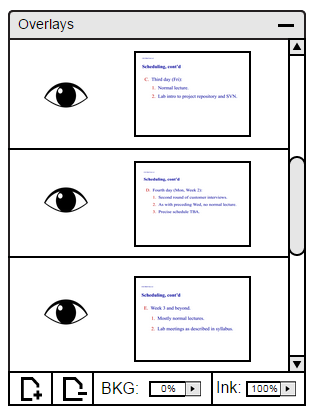
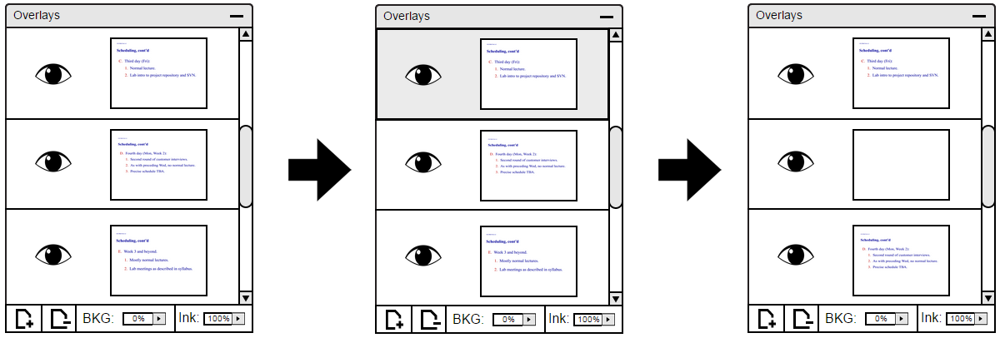
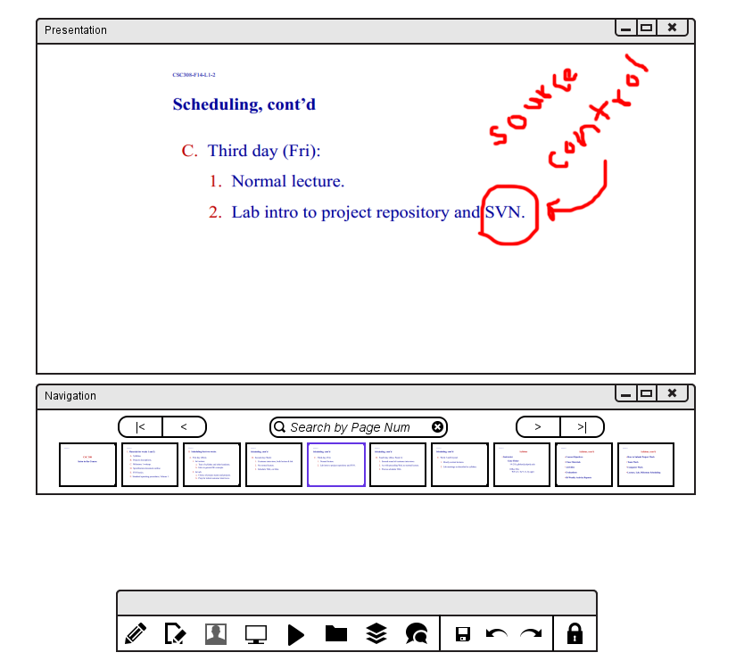
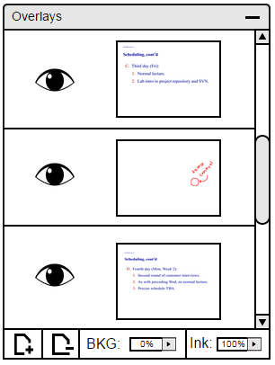

2.3.3. Adding Overlays
When the instructor is giving a lecture and wants to jot something down, such as a reminder or comment, the instructor can do so by writing it down on a new layer. Rather than writing it directly on the slide, the instructor has the ability to make the comments visible to class to see or invisible, for students to look back later but not disturb the overall lecture presentation.
First off, open up the Layers window on the task bar if window is not on the screen. The window should look something similar to Figure 38.

Figure 38: Main view.
Once the window is open, select the slide that is currently on screen. Then, add a layer underneath it, as it is demonstrated in section 2.5.2.1. Figure 39 demonstrates each step for adding a new layer.

Figure 39: Demonstrates adding a new layer.
Once a new layer is made, the instructor can go onto the presentation slide itself and add whatever is needed using the toolbar provided. Figure 40 shows an example of something written on the newly created layer. Figure 41 shows how the comment looks like on the Layers window.

Figure 40: Adding Conmment to Presenation.

Figure 41: Added Comment on Layers Window.
If the instructor or the student does not want the layer showing on their screen, they can simply just turn it off by clicking on the eye next to the layer. Or rather than making the layer invisible, using the ink slider to not make it distracting will also work!
Prev: expand-collapse
| Next: [none]
| Up: presentation
| Top: index